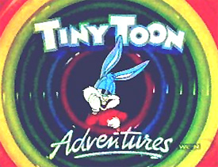

Recently, after people had raised “Looney Toons” as an alternate memory, something odd happened: People report seeing “Looney Tunes” (the actual name) change to “Looney Toons,” at many websites, just for a day or so.
For example, on 28 Nov 2015, Emily said, “Hey guys…. Looney Tunes changed again. Just last week it was Looney Toons…” (“Last week” would have been Nov 15th – 22nd.)
Ordinarily, I’d dismiss that kind of report as a brief and localized issue — usually a print media error, or a typo in a digital TV show listing.

Also, it doesn’t help that Tiny Toons exist, with similar graphics to their “grown-up” counterparts. So, that provides plenty of reason for people to be confused about the cartoon series’ names.
(However, several people — including Lebaneser Scrooge — mentioned Tiny Toons in their comments, so they were aware of the difference.)
In this case, Emily’s comment was one of many. She wasn’t confusing “Tiny Toons” and “Looney Tunes.” In fact, reports were widespread and credible.
The alternate memory — a reality in which it really is “Looney Toons” — was suggested in some 2014 emails. By March 2015, people were more outspoken about this. (See a comment on Comments 5 and another on Comments 6, with more on later pages.)
So, if the one-day switch was deliberate, the crossover wasn’t original; we’d already talked about it, here. And — if it was a genuine mistake (by one or more people) — one might question whether those who changed the name, temporarily, may have come from another reality.
But, that’s assuming the brief name change occurred in this reality. And frankly, it’s stacking one speculation atop another, reaching a precarious conclusion.
As I see it, we have several explanations, none of which can be proved. Here they are, in no particular order:
- Everyone who thought they saw “Looney Toons” was mistaken. (I don’t believe that, based on the volume of reports I received, but it must be mentioned if we’re considering every possibility.)
- Everyone who saw “Looney Toons,” online, had slid into a reality where that was the correct spelling. And then they slid back into this reality, without noticing any other alternate-reality cues.
- The veil (or whatever you want to call it) between realities thinned, briefly and only in certain locations, so the alternate reality’s “Looney Toons” name phased into view in (or from) this reality.
- The brief change — from Looney Tunes to Looney Toons — was deliberate, and either a prank or a social experiment. (The scale of that would be impressive, but not impossible.)
If you saw Looney Toons in November (or at any other time), share your thoughts in comments, below. If possible, include when you saw it, and where you were at the time (nearest city).
LOONEY TUNES and all related characters and elements are trademarks of, and copyright by, © Warner Bros. Entertainment Inc.
Did the people who saw the looney toons spelling see it on only one website or evey website? That would be valuable information, because if it were a deliberate social experiment, that would be quite an undertaking, and nearly impossible, to change every single reference to looney toons online…and on physical objects, such as toys. Now if it changed on physical objects and online media, then that could possibly be an alternate universe or state of consciousness, a different perceptual state.
Lairi, it was reported on more than one website. And, like you, I’m interested in just how widespread it was.
As a social experiment, it could be coordinated if several hosting services (or even a couple of large ones) were participants. I’m not sure if the software exists, in reality, but — at least in theory — one could do a global replace, affecting all sites on any designated server.
I don’t recall any reports of changes in physical objects, but I might be very mistaken… and embarrassed if I overlooked something obvious. (Until I changed this site and which posts accept new comments, I was too busy to investigate this topic, or even pay much attention to it.)
Fiona, I saw the change on physical objects. The Looney tune fruit snacks at my local store were definitely Toons for a while, and seeing them as Tunes a few weeks later upset me so badly I left the store.
Jay, this is helpful. Can you provide approximate dates for when you saw them as Toons and then as Tunes? (Both dates, if possible. Or, at least an approximate guess to the number of days between the sightings.)
I didn’t notice the toons/tunes discrepancy, but I did just notice a merry/merrie melodies thing. I could have sworn it was MERRY melodies.
Hey Fiona,
It’s good to see everything back up and running, and I wish you the best in the New Year!
Now, the reason I’m posting is because, I believe we ma y have run across the “Sinbad/Genie movie” issue at the same time this was happening?
DbD, thank you… and I wish you (and every member of our community, as well as new visitors) a Happy New Year, too.
Now, I’m very interested in any additional details you have. I recall the Sinbad topic being mentioned here, some time ago. ( http://mandelaeffect.com/possible-explanations#comment-18353 )
I would love to know if it happened at exactly the same time as the Looney Tunes/Toons switch. (Unfortunately, I think most people clear their histories regularly enough, something from early November-ish would be gone by now, unless people can connect what they saw to some other date/anchor.)
I’m not sure we can determine whether it was a prank/social experiment or an actual Mandela Effect, but I’d like to try.
What I need is a more focused date range, if possible. Then, I can go through all comments in that exact time period, and see what else was being reported. There may be more… or not.
I do in fact remember seeing this I belive I was on youtube at the time and I remember thinking that it didn’t seem right as I’m sure the spelling was tunes and not tools as I had been looking up a song just a few months before, but also it seemed right like it belonged to another area, but I ignored that feeling and just chalked it up to misremembering the spelling and forgot about it. I will try to go back and see if I can find an exact date for you. I’ve been trying to write discrepancies I’ve noticed down.
The same thing happened with this children television show. A whole scene was missing! When I asked my nephew he just looked at me like I was an idiot!
Perhaps this is my dyslexia, and nothing more, but I could have sworn that it was always Looney Toons. Because I am southern, (I grew up in Alabama) I say the two words with a slightly different sound. Tune, I say with a distinct “ewn” sound instead of the “oon” sound I use for toons. Even looking at logos, “Looney Tunes” just looks way wrong to me, and I am a big fan of the cartoon. I have only just discovered this phenomenon, thanks to YouTube. Now I wonder if Scooby-Doo is correct or not also. I definitely am wondering what else I remember wrong.
Hi Fiona,
I don’t know how helpful this will be but I can provide an exact date and approx. time as to when I literally saw it change from “Toons” back to “Tunes”. It was Friday, November 13th, 2015 shortly after 2:00 pm Eastern time (I’m in Ontario Canada). My GPS co-ordinates on that date were Latitude: 45.42153 | Longitude: -75.697193. I am absolutely certain of this as I marked it in my Outlook calendar at work. I had been reading your phenomenal website for about 3 weeks at that point and had come across the comments about Looney Toons/Tunes and remember thinking to myself that I had always remembered Looney Toons because I assumed that the creators of the characters wanted to portray them as “silly cartoons”. Anyway, I googled Looney Toons and the first website listed on my google search results was looneytoons.com – I scrolled down quickly and saw a few more references to Looney Toons and suddenly my computer “blipped” if I can call it that and everything (including the first website that originally said looneytoons.com) was changed to looneytunes.com.
Another strange event happened to me within 20 minutes of the toons/tunes change. I was still at work (same co-ordinates) and was going outside for a quick smoke break (I’m being specific about it being a smoke break because this literally has to do with my cigarette). I had just opened a new pack of smokes, threw the wrapper in my garbage, grabbed a cigarette out and put it on my desk while I searched my purse for my lighter. After finally finding my lighter in my purse, I went to grab my cigarette from where I had put it on my desk and it was no longer there. I initially figured it must have rolled off my desk and onto the floor so I looked around but couldn’t see it anywhere. I literally got on my hands and knees and was under my desk looking for it (I work at a very professional place and didn’t want anyone to see a cigarette just laying around my desk so I was determined to find it). After almost 5 minutes of looking I finally gave up and grabbed another one out of my pack (thinking now that I was losing my marbles and never took one out to begin with but knew that I had because it was a brand new pack). I walked away from desk to head outside but stopped, turned around and walked back to my desk to have one more look in case my eyes were playing tricks on me – but nothing – no cigarette anywhere to be found. I finally did go outside, had my break, came back up to my office, walked to my desk and lo and behold, my cigarette was on the floor, in plain sight – right by my chair, where I had looked a dozen times before I gave up!! I’m sure you can imagine that I was a little freaked out by this time – not overly freaked out, just a little as things such as this have been happening to me most of my life.
Anyway, I hope this helps a little (sorry for the play by play on every detail – I like to be thorough when I am explaining things). Friday, November 13th, 2015 was also a very sad/emotional day felt everywhere across the world. I’m sure I don’t have to get into detail as to what happened on that day and to be honest, I would rather not. I am however wondering if anyone else had anything strange/out of the ordinary happen on that day. Thank you for taking the time to read this and of course feel free to edit/delete anything in my post and please keep up the amazing work that you and all of the other brilliant readers at this site are doing.
Sorry for the additional comment Fiona (and I don’t know why I hadn’t thought about this until now) but I just looked up the time difference between Ontario Canada and Paris, and Paris is 6 hours ahead of us – so the toons/tunes change that I witnessed happened maybe an hour prior to the attacks (again, I don’t want to get into a discussion about Paris) I do however find it rather coincidental. I hadn’t (again, until now) realized how late in the evening the attacks happened – it was all over the news here when I was driving home from work that day – but it was only 4:30pm our time and again, I didn’t realize there was such a time difference between here and there. Anyway, this may mean nothing at all but just thought it may be some food for thought.
Jennifer CM, I definitely appreciate the insights and data. This could be important, thank you!
I can vividly remember this being Looney Toons because of that assoiation with carToonNetwork and other things as well the cursive writiting the looney toons with there head thru the letters if anyone is intressted and shares the same memory please contact me on facebook i am jordan shane duffie thanks!
I remember looney TOONS all my life it’s been TOONS so 31 years today is the first time I’ve ever seen looney TUNES.
I remember it even in movies like space jam being toons like cartoons not like music tunes.
Porky and others have popped out of the o’s
Omg Delia, I never thought about Porky popping out of the O’s. But this is one of those other things that I recently saw and questioned myself about. Toons like cartoons, and it said Tunes. How could I have possibly been wrong all these years! I seriously dismissed myself as not remembering correctly. I keep coming up with more items that I distinctly remember thinking, well, that’s odd… I always thought it was ‘such and such’ way.
I promise its Looney TOONS I watched the cartoon show a while back. I just asked my 2 little cousins and they both spelled it TOONS!
In my time it was always toons. As a young boy I remeber wondering why and then as I got old enough I then realised that it must be the word play on cartoons. I remember this. After then learning yesterday that this is now somehow tunes is . I even remeber pronouncing the toons as I read it as clearly toons not tunes. The characters in the cartoons were generally looney or silly aswell which made sense. These cartoons are not about tunes, but about the toons. I remember toons clearly and this is really looney.